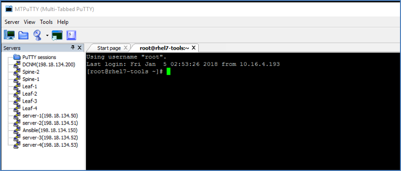
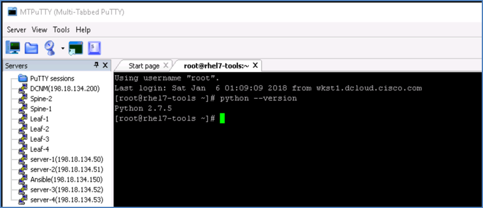

Your first task will be to build an Ansible node on a server running redhat CentOS operating system. At the end of this task, you will have a fully operational Ansible node.
Step 1: Connect to lab using anyconnect VPN
You will connect to dcloud-sjc-anyconnect.cisco.com using Cisco VPN AnyConnect client, as shown in below picture, with the username and password provided by the lab admin.
Note: lab admin will furnish the credentials information to the participant. If you don't have this information please ask the lab speakers.

Step 2: Enter VPN credentials
After prompted for credentials, use the credentials provided by the lab admin.
• Below is an example of user logging into POD1

- Hit accept when the prompt appears to accept the VPN connection login

Step 3: RDP to workstation
In this step, you will connect to the workstation with RDP client on your machines. Use below details for this RDP session:
- Workstation: 198.18.133.36
- Username: dcloud\demouser
- Password: C1sco12345
Below screenshot is only an example for this RDP connection:

Step 4: MTputty
Once you have the RDP session to the remote workstation, then you will use MTputty client to connect to all devices in this lab.
MTputty is already installed on the Desktop of the workstation where you connected using RDP. Run this application by clicking on the icon on the desktop:

Step 5: SSH into Ansible node
SSH into Ansible node (198.18.134.150) by double clicking the Ansible icon on the left pan with username root and password C1sco12345

Step 6: Verify Python
Once successfully SSH into the ansible node, the very first thing we are going to do after logging into Ansible server is verify the python version by running python --version command - as shown below:
[root@rhel7-tools ~]# python --version
Python 2.7.5
It is an important step as we need minimum 2.7.5 version of python in order to install some features for ansbile. The output of above command confirms this version.
Ansible can be run from any machine with Python 2 (versions 2.6 or 2.7) or Python 3 (versions 3.5 and higher) installed.
